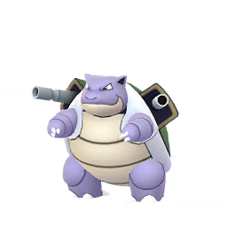
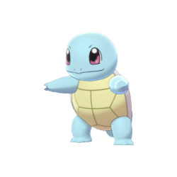
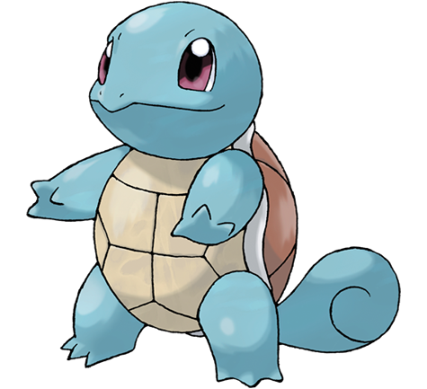
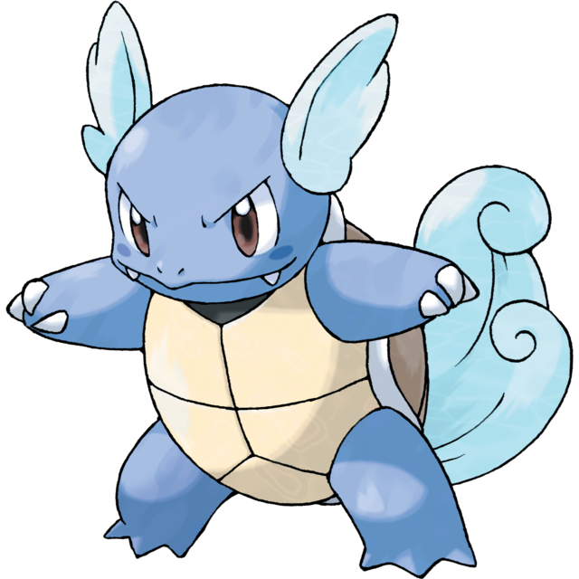
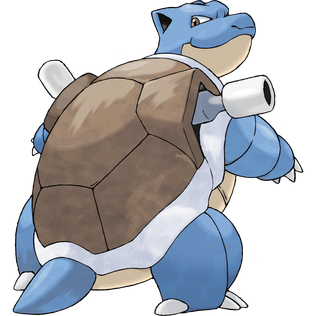

Squirtle was one of the three starter Pokémon in Pokèmon Red and Green, the first game in this franchise. Alongside Bulbasaur and Charmander, Squirtle has an evolutionary line of Wartortle and Blastoise. A fact about Squirtle is that in the Japanese version of the game it name is “銭亀.” This translates to Zenigame, which means ‘baby Japanese pond turtle’.




